Community.
Community involvement is where my empathy meets action. Whether advocating for gender equity, expanding educational access, or preserving cultural heritage, I am driven to build initiatives that create tangible, lasting social change.
Equimed
Co-created a digital platform addressing gender inequality in media by crowdsourcing submissions, moderating narratives, and transforming biased media into gender-reversed posts to educate and raise awareness. Received highest recognition in High School Social Impact Challenge
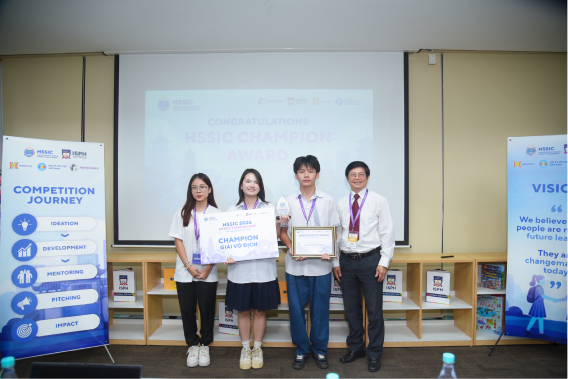
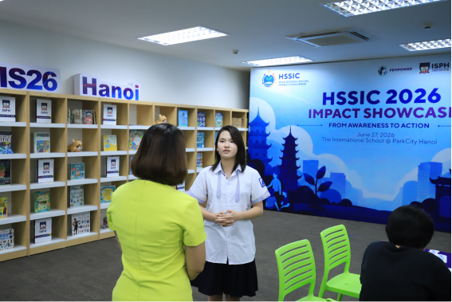
Our initiatives received the highest recognition at the “High School Social Impact Challenge”, earning great reception amongst students and judges, alike
I created a social media platform where young girls could speak up about gender inequality in the media. Through open discussions and mini-essay, I explored media bias by flipping the genders in real headlines, making everyday double standards easier to see and question.
Libreria Project
Served as Vice Head of Content, leading book drives across primary schools, raising funds to build a school in Lạng Sơn, and teaching vital life skills to children.
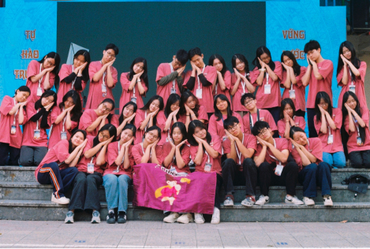
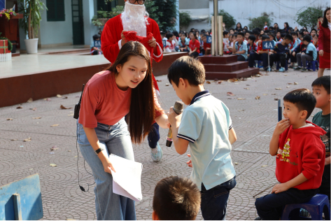
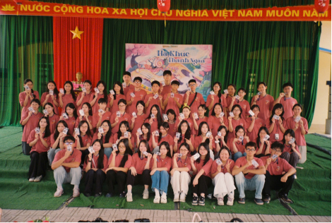
The Wildflower Project
Handcrafted and sold balloon flowers to fund and deliver comprehensive sex education workshops and essential supplies to children in Sơn La.
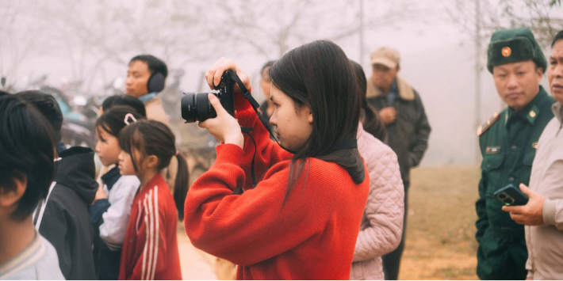
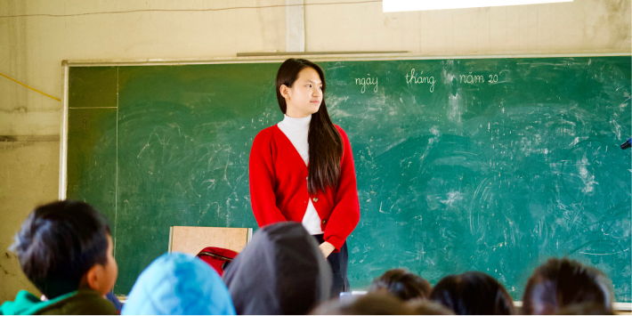
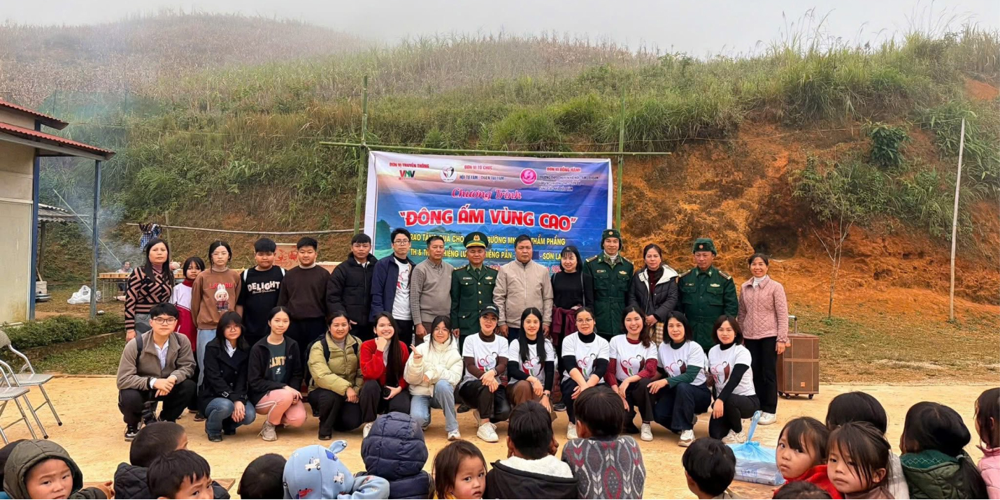
Y4C (Youth for Community)
Participated in community outreach and charitable volunteer missions in Lào Cai to help underprivileged children and local families gain access to STEM education.
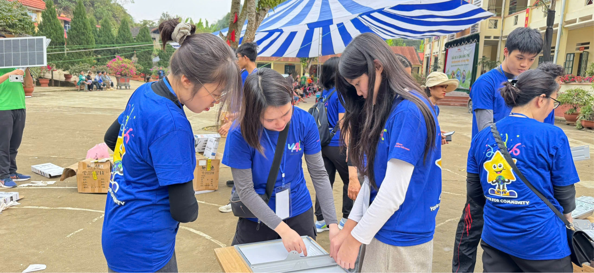
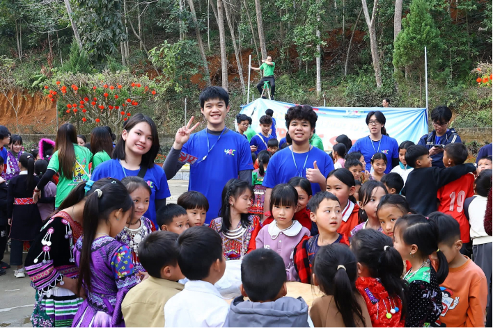
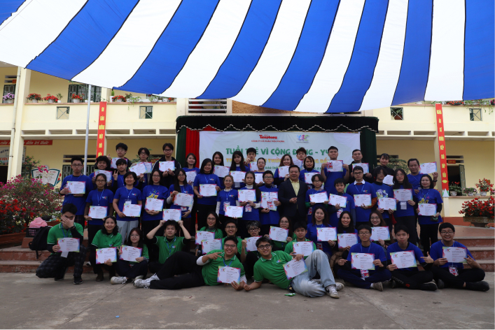
Tu Su
Developed a creative initiative to gamify traditional Vietnamese folk games, preserving cultural heritage and engaging younger generations in interactive play.
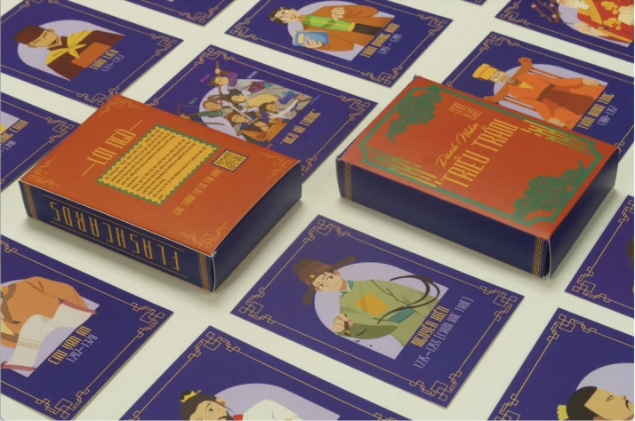
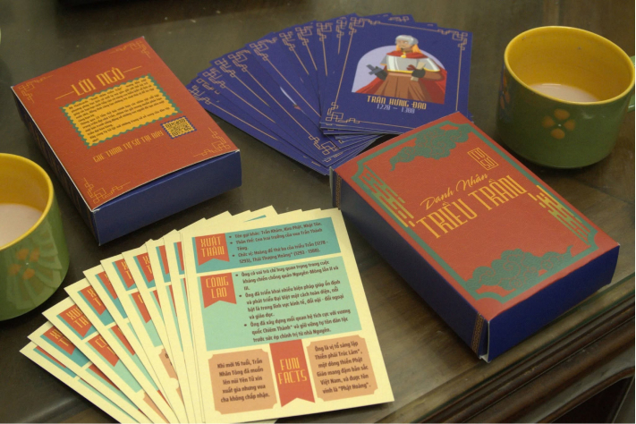